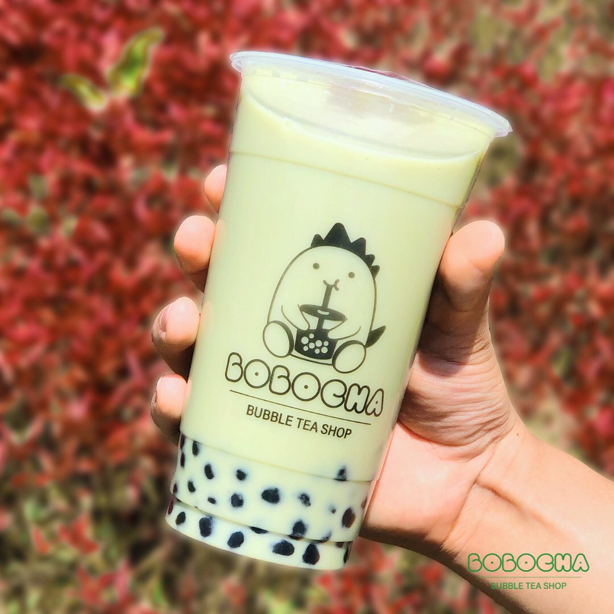
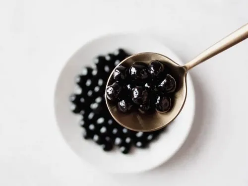

Gerente
¿QUÉ ES EL TÉ DE BURBUJAS?
El té de burbujas, originado en Taiwán, es una bebida que se cree fue creada por la Sra. Liu Han-Chieh de la tienda Chun Shui Tang en Taichung. Aunque su origen exacto sigue en debate, ha ganado popularidad globalmente. La bebida se basa en diferentes tipos de té como el negro, verde u oolong, a los cuales se les añade leche o sabores frutales como mango o lichi.
Además de las variaciones en los sabores, el té de burbujas se caracteriza por incluir complementos como perlas de tapioca, aloe vera, semillas de chía o pudín de huevo. También se le conoce como té de tapioca o té de perlas, y continúa siendo una bebida muy apreciada por su versatilidad y sabor único.
Gerente
¿QUÉ SON LAS BURBUJAS DEL TÉ DE BURBUJAS?
Las burbujas están hechas con harina de tapioca (almidón), agua y azúcar moreno. A diferencia de la harina de trigo, la tapioca solo contiene almidón. Es almidón refinado de la planta de yuca, que es una raíz almidonada como la malanga.Eso es lo que hace que sea tan difícil de hacer. Las partículas de almidón se crean cuando una gran cantidad de glucosa (formas de azúcar) se unen. Cuando estas partículas se mezclan con agua fría, se dispersarán y flotarán.
La verdadera magia comienza cuando añades algo caliente. En un ambiente caliente, las partículas de almidón se agrandarán y se romperán. Las piezas más pequeñas formarán una sustancia pegajosa que puede retener el agua. Este proceso se conoce como la gelatinización de almidón, este es similar al proceso de elaboración de la gelatina.